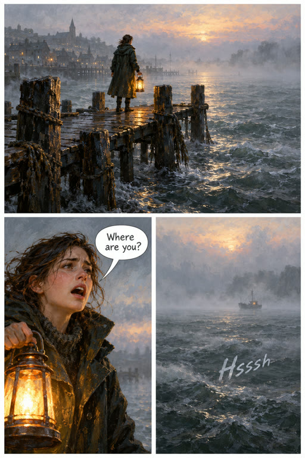
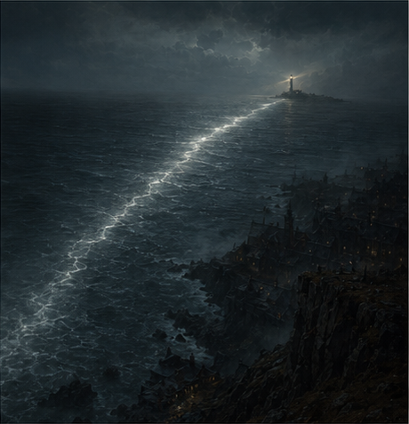
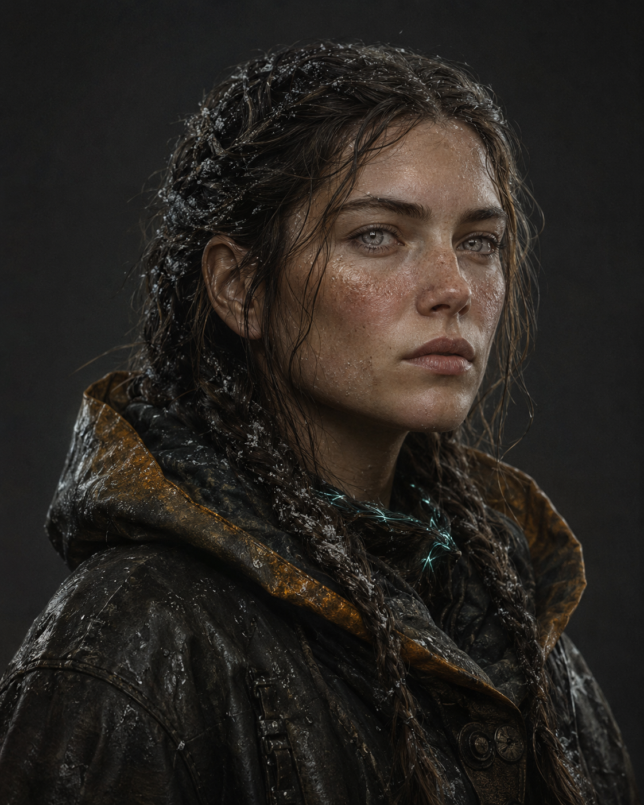
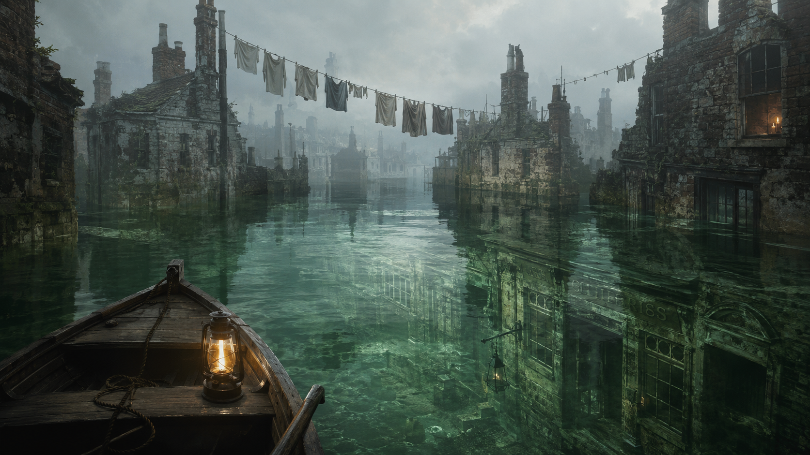
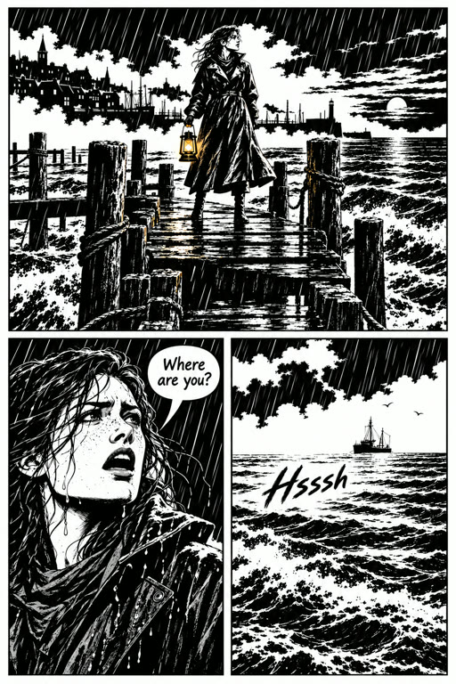

271a Panels: the fault, whole, under the page
Pages
Chapter1 · The tideModePanel by panelStyle
PaintedReadingLeft to rightReadExport
1 2
23
4
+ Page
Page 2
Grid
Feature
Wide
Splash
Manga
Webtoon
Panel 11 line
Maren alone on the flooded pier at dawn, the lighthouse beam in the fog.
ShowsThe pier

MarenThe pierCaption—She stopped the pen before the hook.
+ Line
Panel 21 line
Maren close, collar up, calling out over the water.
ShowsMarenThe pier
The pierSpeechMarenWhere are you?
+ Line
Panel 31 line
The empty water. Something moves under the surface.
Sound—Hsssh
+ Line
PanelsWords

Defect
Panel 21 to fix1 of 2
DefectLeft eye sits lower than the right.
Take 2 of 2
Make againAccept anywayChange with Arke
3 of 3GPT Image 2Brief
271b Accept anyway: on to the next fault
Pages
Chapter1 · The tideModePanel by panelStylePaintedReadingLeft to rightReadExport1
23
4
+ Page
Page 2
Grid
Feature
Wide
Splash
Manga
Webtoon
Panel 11 line
Maren alone on the flooded pier at dawn, the lighthouse beam in the fog.
ShowsMarenThe pier
The pierCaption—She stopped the pen before the hook.
+ Line
Panel 21 line
Maren close, collar up, calling out over the water.
ShowsMarenThe pier
The pierSpeechMarenWhere are you?
+ Line
Panel 31 line
The empty water. Something moves under the surface.
Sound—Hsssh
+ Line
PanelsWords
Detail
Panel 31 to fix1 of 1
DetailA second bell on the desk. The script has one, on the wall.
Take 1 of 1
Make againAccept anywayChange with Arke
3 of 3GPT Image 2Brief
271c Words: says what is in the way
Pages
Chapter1 · The tideModePanel by panelStylePaintedReadingLeft to rightReadExport1
23
4
+ Page
Page 20 of 3 placedPanelsWords
2 panels to acceptPanels
1
Caption—Panel 1
She stopped the pen before the hook.2
SpeechMarenPanel 2
Where are you?3
Sound—Panel 3
HssshLetteringComic
3 lines to placeAccept page
271d Words: one Undo, Accept page stays put
Pages
Chapter1 · The tideModePanel by panelStyle
NoirReadingLeft to rightReadExport1
2
3
4
+ Page
Page 23 of 3 placedPanelsWords
Arke placed 3 linesUndo
1
Caption—Panel 1
She stopped the pen before the hook.2
SpeechMarenPanel 2
Where are you?3
Sound—Panel 3
HssshLetteringComic
Every line placedAccept page
She stopped the pen before the hook.1
Where are you?2
Hsssh3
271e Lettering follows the style
She stopped the pen before the hook.
Where are you?
Hsssh
She stopped the pen before the hook.
Where are you?
Hsssh